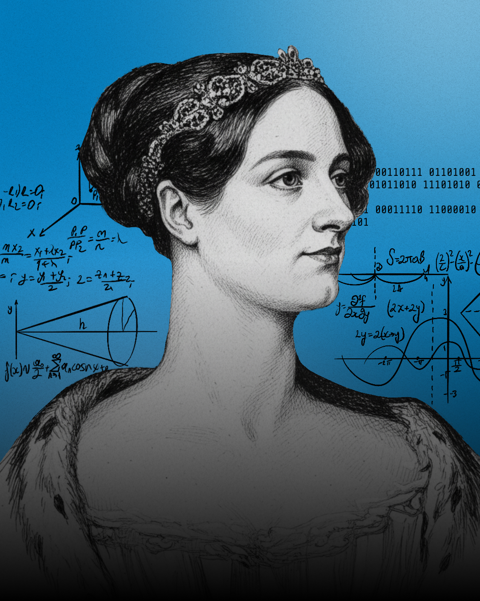
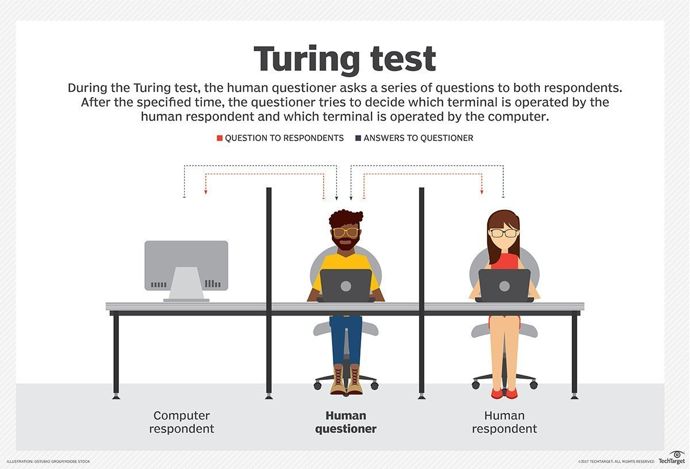
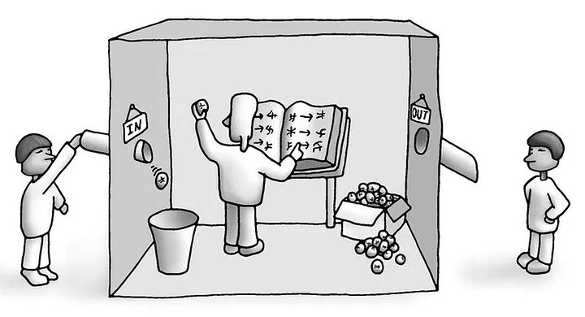
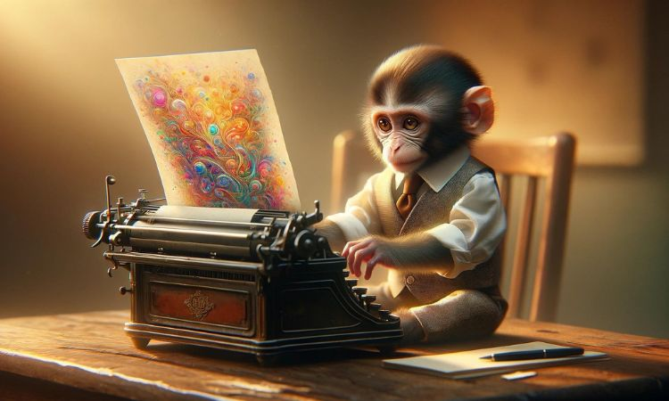

Historia, filosofía, la objeción de Ada Lovelace, la respuesta de Alan Turing y el debate actual.
Cárdenas Rico Mafer y Espinoza Rodriguez Ailine 5AMPLa idea de crear seres o máquinas que "piensen" es muy antigua, pero la IA como ciencia nació en el siglo XX.
Mitos de autómatas (como Talos en la mitología griega). Pascal construye una calculadora en 1642 y Leibniz sueña con un "cálculo del razonamiento".
Charles Babbage diseña la Máquina Analítica, un antecesor de la computadora. Ada Lovelace escribe el primer algoritmo publicado para ella.
Alan Turing define qué es calcular (la "máquina de Turing") y en 1950 propone el juego de la imitación.
En Dartmouth se usa el nombre "inteligencia artificial". Hubo épocas de entusiasmo y "inviernos de la IA" por falta de resultados.
| Año | Logros | Por qué importó |
|---|---|---|
| 1966 | ELIZA | Uno de los primeros programas de conversación. |
| 1997 | Deep Blue vence a Kaspárov | Una máquina gana al campeón mundial de ajedrez. |
| 2012 | Aprendizaje profundo | Las redes neuronales arrasan en reconocimiento de imágenes. |
| 2016 | AlphaGo vence a Lee Sedol | El programa de ia AlphaGo vence a un campeón mundial. |
| 2017 | Arquitectura Transformer | Base de los modelos de lenguaje actuales. |
| 2022 | ChatGPT | La IA generativa llega al público general. |
1: mitos · 2: máquinas de calcular · 3: ciencia de la IA · 4: aprendizaje profundo e IA generativa
Desde que la IA empezó a avanzar, a la gente le surgió una duda bien profunda: si una máquina puede actuar como si pensara, ¿de verdad tiene mente o solo nos está engañando? Los filósofos llevan años discutiendo esto desde varios ángulos:
Para demostrar que esto no es tan simple, un filósofo inventó un ejemplo famoso llamado La habitación china. Imagínate a alguien encerrado en un cuarto que no sabe ni una palabra de chino, pero tiene un manual enorme que le dice: "Si por la puerta te meten este símbolo, contesta con este otro". La gente afuera va a pensar que esa persona sabe hablar chino, pero en realidad solo está siguiendo un instructivo a ciegas sin entender nada.
De ahí sale la diferencia entre una IA débil (que solo imita y sigue reglas, como ChatGPT) y una IA fuerte (que realmente comprendería lo que hace y tendría conciencia propia).
La IA piensa como una persona.
La IA realiza tareas que en una persona requieren inteligencia.
Es solo un programa.
Es una pregunta abierta.
(Las posturas varían según el autor.)
¿Pueden pensar las máquinas?

Quién fue: Augusta Ada King, condesa de Lovelace (1815–1852), matemática inglesa e hija del poeta Lord Byron. Colaboró con Charles Babbage.
Qué hizo: en 1843 tradujo un artículo sobre la Máquina Analítica y le añadió sus propias notas, más largas que el original. En la Nota G describió un método para calcular números de Bernoulli, considerado el primer programa de computadora.
En esas notas escribió que la máquina no tiene ninguna pretensión de originar nada: solo puede hacer lo que nosotros sabemos ordenarle. A esto se le llama la objeción de Lovelace: las máquinas no son creativas, solo siguen instrucciones.
La Máquina Analítica no pretende originar nada. Puede hacer cualquier cosa que sepamos ordenarle que haga.
Lectura clásica: la máquina ejecuta, no inventa.
Dato: Lovelace también imaginó que la máquina podría componer música si las notas se expresaban con números.
Alan Turing (1912–1954) fue matemático y pionero de la computación. En su artículo Computing Machinery and Intelligence (1950) cambió la pregunta "¿pueden pensar las máquinas?" por una prueba práctica: el juego de la imitación, hoy llamado test de Turing. En ese mismo artículo respondió a la "objeción de Lady Lovelace".
Un interrogador conversa por escrito con una persona y con una máquina sin saber cuál es cuál. Si no puede distinguirlas, tiene sentido decir que la máquina "piensa".

Esquema del test de Turing.
Con los modelos de lenguaje y las IA que generan imágenes, la discusión volvió: ¿lo que producen es creatividad real o solo imitación de patrones?
Los modelos producen textos, imágenes y jugadas que nadie programó paso a paso (como la jugada 37 de AlphaGo en 2016). Si el resultado es nuevo y valioso, la frontera entre "ordenar" y "originar" se vuelve borrosa.

Searle dice que manipular símbolos no basta para entender. En 2021 Emily Bender y otras autoras llamaron a los modelos de lenguaje "loros estocásticos": combinan patrones del texto con el que fueron entrenados, sin entender su significado.

El "test de Lovelace" (Bringsjord y otros, 2001) pide que la máquina cree algo que su programador no pueda explicar. Mark Riedl propuso en 2014 una versión 2.0 en la que la máquina debe crear algo con condiciones dadas por un juez.
| # | Ámbito | Beneficio | Riesgo | Ejemplo |
|---|---|---|---|---|
| 1 | Salud | Detección temprana de enfermedades | Errores y privacidad de datos | Análisis de radiografías |
| 2 | Educación | Apoyo personalizado | Copiar sin aprender | Tutores virtuales |
| 3 | Trabajo | Tareas repetitivas automatizadas | Pérdida de empleos | Atención al cliente |
| 4 | Información | Traducción y búsqueda rápida | Deepfakes y noticias falsas | Traductores |
| 5 | Arte | Nuevas herramientas creativas | Derechos de autor | Imágenes generadas |
| La IA trae beneficios y riesgos al mismo tiempo... | ||||
Por eso se crean leyes, como la Ley de IA de la Unión Europea (2024), que regula los sistemas según su nivel de riesgo.
Conclusión: la IA es una herramienta muy poderosa; cómo la usemos depende de las personas.
Estos campos muestran distintos tipos de input de Bootstrap.
| Materia: | Desarrollo web Progra |
| Tema: | La IA en la vida moderna |